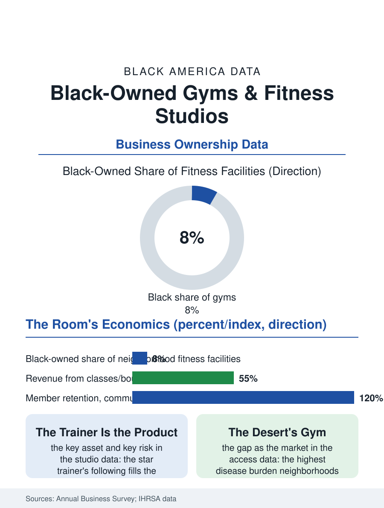

Black Business
Strong Rooms: Black-Owned Gyms and Fitness Studios
From the boxing gym's dues to the boutique studio's star trainer, the strong room is a third place in the industry's thinnest map. The gym file.

The Black-owned gym and fitness studio sells the body's maintenance to the community the wellness industry underserves: from the historic boxing gyms and the physical culture teachers of the early century to the current era's boutique studios and big-box franchisees, the trade counts Black ownership above the service average in its neighborhood segment. The business census folds the trade into the fitness facility categories. This article reads the gym file.
Boxing Gyms and Boutique Studios
The tradition's root is the boxing gym, the neighborhood institution where the fight game's hopefuls and the workingman's conditioning shared one ring, the trainer a figure of the community's officer class, and the gym's economics, the dues of the many funding the careers of the few, the prototype of the membership model the industry now runs on. The modern trade's tiers reproduce the service economy's: the big-box and budget chains, whose franchise and corporate stores employ the community's trainers and managers, the mid-market clubs, and the boutique studio, the cycling, boxing-fitness, barre, and strength formats whose per-class pricing built the current era's fitness boom and whose ownership, in the Black metros, includes a visible tier of Black founders, several grown into regional chains and social media-driven brands of genuine scale in the trade data. The studio model's economics are the lease's and the schedule's: the peak-hour classes carry the rent, the instructor is the product in a way the big box's floor is not, and the star trainer's book, the following that fills their slots, is the studio's key asset and its key risk, walking out the door in the pattern of the salon's chair when the relationship turns.
The Wellness Gap as a Market
The fitness file's market logic is the health file's map: the neighborhoods of the highest chronic disease burden are the fitness industry's thinnest map, the gym desert adjoining the food and pharmacy deserts in the access literature, so that the Black-owned studio in its own neighborhood operates as both a business and the access system's local agent, its clientele's results the community's health data in miniature. The corporate wellness and insurance incentive channels, the subsidized memberships the employers and the plans distribute, route through the chains' networks in the main, and the independent studio's admission to those channels is the file's current commercial frontier. The pandemic rewrote the trade's terms in a single season: the closures' toll on the independent tier, the home equipment and the streaming workout's permanent share, and the survivors' hybrid model, the studio as content producer with a physical flagship, are the era's residue in the trade data, with the Black fitness influencer economy, the trainers whose followings monetize directly, standing as the trade's disintermediated tier, the instructor's book finally freed from the lease altogether.
Strong Rooms
The gym file closes on the room's social function, which the trade's own retention data underwrite: the gym is the neighborhood's third place for its members, the regulars' hour a standing social institution, and the Black-owned room carries the culture's particular charges, the music's curation, the hair's practicalities understood, the body's diversity on the floor rather than in the brochure, the details whose sum the members describe as comfort and whose absence prices the chain's cheaper dues above the studio's. The forward file is the wellness economy's growth: the recovery and longevity services, the sauna and the stretch and the assessment, layering onto the studio's model at price points the community's professional tier sustains, and the medical fitness channel, the exercise prescriptions of the health system's prevention turn, promising the studio a payer the trade has never had. The census counts the facilities in the industry's categories, the Black-owned share a share the trade surveys place above the retail average in the neighborhood segment. The file's last entry belongs to the morning regulars, the five o'clock institution of the working and the retired, whose dues have carried the room through every economy in the data, and whose presence is the gym's true balance sheet, renewed monthly, in the strong room their consistency built. The oldest member on the morning floor started, in more than one of these rooms, in the boxing gym's era, and the trainers half his age still ask him to check their form.
More in Black Business
Black-Owned Businesses: Counts, Receipts, and the Representation Gap
About 161,000 Black-owned employer firms and three million solo ventures: how the Census Bureau counts Black business ownership, where firms concentrate, and the gap between population share and business share.
Black Median Net Worth: The Wealth Gap in Federal Reserve Data
The Federal Reserve puts Black median family net worth at $44,900, against $285,000 for White families — about 16 cents on the dollar. The widest gap in economic data.
Black Buying Power: The $1.8 Trillion Consumer Economy
Black buying power is estimated at about $1.8 trillion — larger than the economy of most nations. What the figure measures, who produces it, and what it buys.
Source: U.S. Census Bureau, Annual Business Survey for fitness facilities; International Health Racquet and Sportsclub Association industry data.